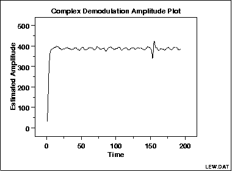

|
1.
Exploratory Data Analysis
1.3. EDA Techniques 1.3.3. Graphical Techniques: Alphabetic
|
|||
|
Purpose: Detect Changing Amplitude in Sinusoidal Models |
In the frequency analysis of time series models, a common
model is the sinusoidal model:
The complex demodulation amplitude plot (Granger, 1964) is used to determine if the assumption of constant amplitude is justifiable. If the slope of the complex demodulation amplitude plot is not zero, then the above model is typically replaced with the model:
|
||
|
Sample Plot: |

This complex demodulation amplitude plot shows that:
|
||
|
Definition: |
The complex demodulation amplitude plot is formed by:
|
||
| Questions |
The complex demodulation amplitude plot answers the following
questions:
|
||
|
Importance: Assumption Checking |
As stated previously, in the frequency analysis of time series
models, a common model is the sinusoidal model:
The complex demodulation amplitude plot can be used to verify this assumption. If the slope of this plot is essentially zero, then the assumption of constant amplitude is justified. If it is not, α should be replaced with some type of time-varying model. The most common cases are linear (B0 + B1*t) and quadratic (B0 + B1*t + B2*t2). |
||
| Related Techniques |
Spectral Plot Complex Demodulation Phase Plot Non-Linear Fitting |
||
| Case Study | The complex demodulation amplitude plot is demonstrated in the beam deflection data case study. | ||
| Software | Complex demodulation amplitude plots are available in some, but not most, general purpose statistical software programs. | ||